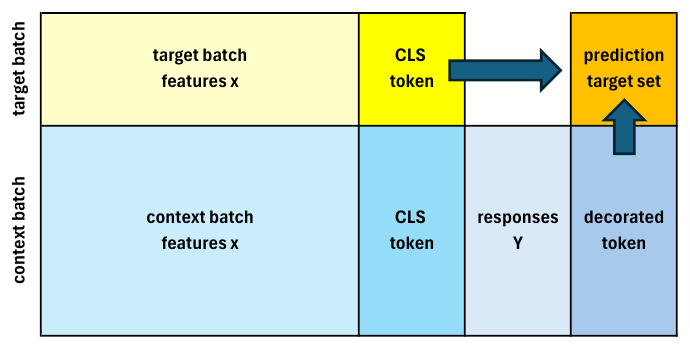
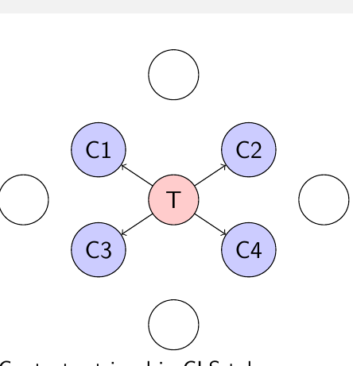
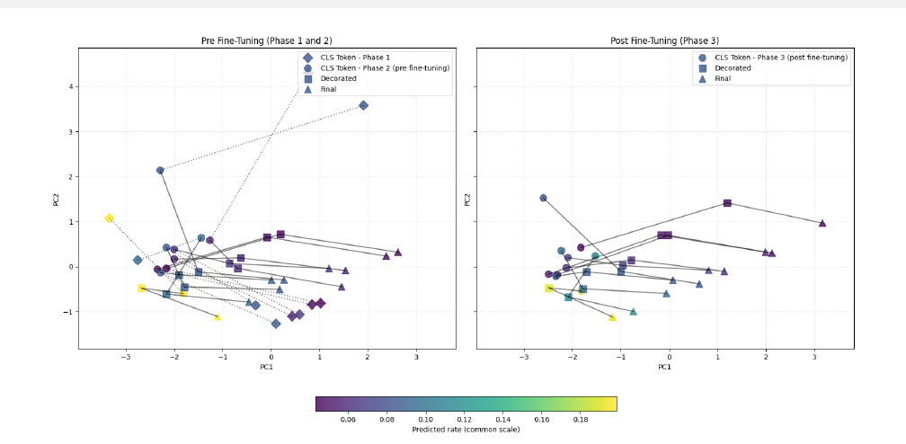
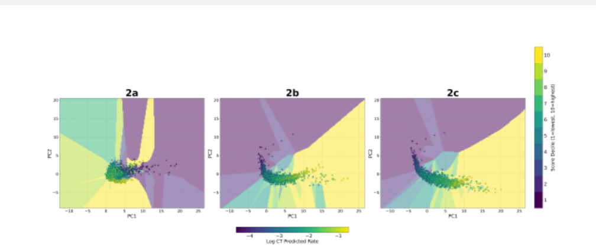

Lecture 12: Foundation Models and In-Context Learning
Deep Learning for Actuarial Modeling
Summer School ‘Lifelong Learning’
Università Cattolica del Sacro Cuore, Milano
A foundation model is trained on a broad and diverse corpus of data that transfers across many downstream tasks and domains with minimal task-specific changes. This lecture traces the GPT series, then turns to tabular foundation models such as TabPFN and TabICL, and to the in-context learning credibility transformer (ICL-CT), which integrates Bühlmann credibility with the attention mechanism and generalises to unseen region categories with no retraining.
1 Foundation models
1.1 What are foundation models?
Definition: A Foundation Model is trained on broad and diverse corpus of data that transfer across many downstream tasks (and domains) with minimal task-specific changes
Core properties: Scale (parameters, tokens), general representations, and versatile adaptation (prompting/in-context learning (ICL), retrieval augmented generation (RAG), fine-tuning)
Backbone: Usually Transformers are used with auto-regressive (AR) data generation (Vaswani et al., 2017)
Scaling: Capability follows a “compute-data-parameter” simultaneous power law growth (Kaplan, McCandlish, Henighan, Brown, et al., 2020; Hoffmann, Borgeaud, Mensch, et al., 2022) to get optimal models
1.2 Architectural backbone: transformers
Self-attention replaces recurrent and convolutional structure; parallelizable sequence modeling (Vaswani et al., 2017)
Pre-training variants: masked language model (ML) (Devlin, Chang, Lee, & Toutanova, 2019) vs. auto-regressive decoders
Inductive biases: weak relation input-output, gives great modeling flexibility through the self-attention mechanism (Geva et al., 2021)
Positional encodings and other long-context tricks to adapt to sequential data (e.g., rotary position embedding (RoPE); Su, Lu, Pan, Wen, & Liu, 2021)
Previously, we have mentioned scaling laws (Kaplan et al., 2020)
1.3 Data needs for training foundation models
Scale: Billions to trillions of tokens with a compute-optimal balance of parameters and tokens; budget tokens, not only parameters (Hoffmann et al.,
Diversity: Broad domains, style, language, and modality coverage (range, diversity and completeness) to learn general representations and handle distribution shift
Quality: Rigorous filtering and de-duplication at document and paragraph level; near-duplicate removal; language identification (Italian/German/…); low-quality text removal; test-set decontamination
Long-tail coverage: Upweight rare languages, domains, and entities; mix high-quality curated slices with broad web-scale data to raise signal-to-noise ratio
1.4 Foundation models as a model class
Input space \(\mathcal{X}\) and output space \(\mathcal{Y}\)
Model class: \[\mathcal{F} = \{ f_\theta : \mathcal{X} \to \mathcal{Y} ~|~ \theta \in \Theta \},\] with parameter set \(\Theta \subset \mathbb{R}^r\), \(r \gg 10^8\)
Probabilistic view, categorical case with \(K\) classes \(\mathcal{K} = \{1, \ldots, K\}\), the model \(f_\theta(\boldsymbol{x}) \in \mathcal{Y} = \mathbb{R}^K\) parametrizes the probabilities of the next token \[p_\theta(Y = k \mid \boldsymbol{x}) = \frac{\exp\{f_{k,\theta}(\boldsymbol{x})\}}{\sum_{l=1}^K \exp\{f_{l,\theta}(\boldsymbol{x})\}} \qquad \text{for } k \in \mathcal{K};\] this applies the softmax to the components of \(f_\theta(\boldsymbol{x}) = (f_{l,\theta}(\boldsymbol{x}))_{l=1}^K\)
This allows for next token simulation by AR generation
1.5 Pre-training and adaptation
By a slight abuse of notation, assume \(\boldsymbol{x} = \boldsymbol{x}_{1:t} = (x_1, \ldots, x_t)\) is sequential data of tokens, and let the next token \(Y = x_{t+1}\) be in the same token space
Pre-training (auto-regressive MLE): \[\theta^\star_{\rm pre} \in \arg\max_{\theta \in \Theta} \sum_t \log p_\theta(Y = x_{t+1} \mid x_{1:t})\] calibrates broad priors
Adaptation options: fine-tune, parameter-efficient fine-tuning (PEFT), low-rank adaptation (LoRA), in-context leaning (ICL) via demonstration examples, retrieval augmented generation (RAG)
ICL: \(f_{\theta^\star_{\rm pre}}([\mathcal{C}, \boldsymbol{x}])\) with prompt demonstration \(\mathcal{C}\) (Brown et al., 2020)
2 Generative pre-trained transformer (GPT) series advances
2.1 From GPT-1 to GPT-5
GPT-1/2: Unsupervised pre-training improves transfer; scaling unlocks fluent generation (Radford, Narasimhan, Salimans, & Sutskever, 2018; Radford et al.,
GPT-3: Emergent few-shot learning via prompting; broad task coverage without gradient update fine-tuning (Brown et al., 2020)
InstructGPT: Alignment via reinforcement learning with human feedback (RLHF) improves following instructions and safety (Ouyang et al., 2022)
GPT-4: Strong reasoning, broader safety/robustness; multimodal variants (OpenAI, 2023)
GPT-5: Multi-step problem solving with integrated agents, e.g., GPT-5.6 (July
- is strong in mathematical problem solving
2.2 GPT features
Scale: GPT-3 175 billions parameters; GPT-4 2 trillions parameters; GPT-5 multi trillions parameters and 400K tokens window size
Zero-shot Chain-of-Thought (CoT); few-shot prompting with demonstration examples; RAG setting a fixed context (e.g., claims manual, solvency legislation); self-consistency by multiple trials and integrated agents
Sensitivities: prompt format/order matters; benefits from better instructions and demonstrations; context sensitive meanings may not have been sufficiently represented in the training set
No proper mathematical reasoning, but only likely next token simulation (mathematical language Lean):
Prompt pattern: \([(\boldsymbol{x}_1, y_1), \ldots, (\boldsymbol{x}_t, y_t), \boldsymbol{x}_{\rm query}] \mapsto \widehat{y}_{\rm query}\)
3 Tabular foundation models
3.1 Why tabular is different
Heterogeneous features, mixed types, missingness, and no natural order
Unclear how to train across tables with different covariates
Strong baselines (GBMs) set a high bar
Sample sizes often modest
Foundation approach: pre-train cross-table priors and reuse across different tasks
3.2 Tabular landscape: families and design
TabTransformer: categorical tokenization and attention over these features (Huang, Khetan, Cvitkovic, & Karnin, 2020)
FT-Transformer: feature tokenizer (FT) also acts on continuous features leading to a simplified, strong baseline for tabular DL (Gorishniy, Rubachev, Khrulkov, & Babenko, 2021)
TransTab: cross-table transfer with aligned embeddings (Wang & Sun, 2022)
TabPFN: Prior-data fitted network for tabular classification and beyond. Trained on synthetic tasks sampled from a prior; uses alternating column and row attention to perform ICL in a single forward pass (Hollmann, Müller, Eggensperger, & Hutter, 2022; Müller, Hollmann, Pineda Arango, Grabocka, & Hutter, 2021)
TabPFN v2: Tabular foundation model with wide wins up to \(n \approx 10^4\) instances, large speed-ups over classical baselines (Hollmann et al., 2025)
TabICL: Scalable ICL to \(n \approx 5 \times 10^5\) instances by a 2-stage architecture: column-then-row embedding to fixed-dimension, then a transformer for ICL on embeddings. Often faster and stronger than TabPFN for large \(n\) (Qu, Holzmüller, Varoquaux, & Le Morvan, 2025)
3.3 TabPFN: Bayesian view
Prior-data fitted network learns to approximate the Bayesian posterior given the ICL context \(\mathcal{D}\): \[p(y^\star \mid \boldsymbol{x}^\star, \mathcal{D}) = \int p(y^\star \mid \boldsymbol{x}^\star, \boldsymbol{\theta})\, p(\boldsymbol{\theta} \mid \mathcal{D})\, d\boldsymbol{\theta}\]
TabPFN learns a function \(f_\psi(\boldsymbol{x}^\star, \mathcal{D}) \approx p(y^\star \mid \boldsymbol{x}^\star, \mathcal{D})\) by minimizing the expected negative log-likelihood over synthetic tasks (Müller et al., 2021)
This has structural similarities to variational inference and denoising diffusions, which maximize the evidence lower bound (ELBO) instead of the intractable marginal log-likelihood
TabPFN fitting alternates attention over columns and rows to mix feature-wise and record-wise information efficiently. This deals with the missing order in columns, but leads to limitations in sample sizes
3.4 TabICL: problem and idea
Challenge. Alternating full row and column attention becomes expensive when \(n\) is large
Idea. Pre-train on synthetic datasets and build fixed-dimension row embeddings, then run ICL over those embeddings for scalability (Qu et al.,
Two-stage transformer:
column-then-row to embed row
ICL transformer over a compact set of row embeddings
Can handle up to \(5 \times 10^5\) samples at inference on affordable hardware while maintaining ICL benefits
3.5 TabICL: two-stage computation
Let \(\boldsymbol{x} \in \mathbb{R}^q\) be a row with mixed types.
Stage 1 produces a fixed-dimensional row embedding \[r(\boldsymbol{x}) = \underbrace{\mathrm{RowTransformer}\big( \mathrm{ColEmbed}(\boldsymbol{x}) \big)}_{\text{inter-feature interactions within the row}} \in \mathbb{R}^d,\] where:
ColEmbed is a distribution-aware column-wise embedding: for each feature \(1 \leq j \leq q\), a Set Transformer operates on that column’s values across rows to produce a per-cell feature embedding for \(\boldsymbol{x}_j\).
RowTransformer is a Transformer across the \(q\) feature embeddings of the same row (not across rows), using a small number of learnable CLS tokens and applying RoPE to prevent representation collapse when feature distributions are similar. Concatenated CLS tokens form \(r(\boldsymbol{x})\).
Stage 2 (dataset-wise ICL). For a support set \(S = \{(\boldsymbol{x}_i, y_i)\}_{i=1}^t\) and a query \(\boldsymbol{x}^\star\), \[\mathcal{S} = \left[\, r(\boldsymbol{x}_1),\, e(y_1),\, \ldots,\, r(\boldsymbol{x}_t),\, e(y_t),\, r(\boldsymbol{x}^\star),\, e(\texttt{[MASK]}) \,\right],\] and a causal-masked transformer outputs the prediction at [MASK].
Training minimizes the log-likelihood at the [MASK] position over synthetic tasks (Qu et al., 2025).
3.6 TabICL: concrete example
Target \(\boldsymbol{x}^\star\): Region=RegionB, Vehicle=SUV, DriverAge=24
Support set \(S\) containing \(t = 3\) instances
| ID | Region | Vehicle | DriverAge | ClaimCount | RowEmbed |
|---|---|---|---|---|---|
| 1 | RegionA | SUV | 25 | 1 | \((r(\boldsymbol{x}_1), e(y_1))\) |
| 2 | RegionB | SUV | 23 | 0 | \((r(\boldsymbol{x}_2), e(y_2))\) |
| 3 | RegionA | Crossover | 24 | 1 | \((r(\boldsymbol{x}_3), e(y_3))\) |
Step 2: ICL over \(r(\boldsymbol{x}^\star)\) and the RowEmbed context
3.7 TabPFN vs. TabICL: when to use which
If \(n \leq 10^4\): TabPFN-v2 is a powerful default with excellent calibration and speed (Hollmann et al., 2025)
If \(n > 10^4\): TabICL often wins on accuracy and wall time (Qu et al., 2025)
If distribution shift is a concern: drift-aware TabPFN can be strong when the shift is encoded in the prior (Helli, Schnurr, Hollmann, Müller, & Hutter, 2024)
If latency and memory are tight: TuneTables yields small learned contexts for PFNs with strong results (Feuer et al., 2024)
Remark: These TabPFN/TabICL pre-trained architectures are especially strong on small insurance problems where learning a strong model is difficult. They may have some deficiencies on unbalanced data
4 In-context learning (ICL) credibility transformer
4.1 The challenge in actuarial modeling
Limited data problem:
Small portfolios
New products or regions
Rare events
New vehicle models
Traditional solution:
Bühlmann credibility Theory (Bühlmann, 1967)
Linear combination of individual and collective experience
Modern challenge:
Complex non-linear patterns
High-dimensional feature spaces
Need for dynamic adaptation
4.2 Evolution: from credibility to ICL
Classical Credibility (Bühlmann, 1967)
- Linear blend of individual and collective experience
Credibility Transformer (Richman, Scognamiglio, & Wüthrich, 2025)
Embeds credibility idea into the attention mechanism
CLS token as learnable prior balancing between individual and collective experience
ICL-Enhanced Credibility Transformer (Padayachy, Richman, Scognamiglio, & Wüthrich, 2025)
Dynamic context from similar instances
Zero-shot generalization capability
No retraining required for ICL
4.3 In-context learning: key innovation
ICL in an Actuarial Context
Context \(=\) experience on similar insurance policies
Adaptation \(=\) adjusting predictions based on context
Zero-shot generalization \(=\) handling new risk profiles
Key questions
Can ICL improve performance on a model that has been pre-trained using supervised learning?
If this is the case, what is the explanation for this improvement?
Can ICL for tabular data be used to improve the performance of a much smaller pre-trained model focussing only on a single dataset?
4.4 ICL-CT: architecture overview

In-context learning credibility transformer (ICL-CT):
Target and context processed jointly with causal masking
Context batch experience is used to decorate the CLS token
4.5 Component 0: train a base credibility transformer
In the initial stage we train the credibility transformer of Richman et al. (2025), call this the “base CT”
Purpose 1, encoder: The credibility transformer is a strong predictive model, and it provides a CLS token embedding of every insurance policy. We use this CLS token space for context retrieval
Purpose 2, decoder: The credibility transformer decoder (mapping from the CLS token space to the output) is kept fixed/frozen (information bottleneck), and the ICL mechanism acts in the CLS token space
4.6 Component 1: context retrieval
Purpose: Retrieve similar insurance policies for the context
Space: Base CT CLS token embeddings
Metric: Cosine similarity
Retrieval: \(K = 64\) neighbors per target; union across chunk
Batching: Keep top \(c = 1000\) context instance; target batch size \(m = 200\)

4.7 Component 2: outcome token decorator
Purpose: Inject observed responses on the context batch into their CLS tokens in a credibility-weighted way
Decoration (context instance \(j\)): \[\boldsymbol{c}^{\rm decor}(\boldsymbol{x}_j) = \widehat{\boldsymbol{c}}^{\,\rm cred}(\boldsymbol{x}_j) + \frac{v_j}{v_j + \kappa}\, \boldsymbol{z}^{\rm FNN1}(Y_j)\]
Notes:
Applied to context only; targets keep CLS token \(\widehat{\boldsymbol{c}}^{\,\rm cred}(\boldsymbol{x}_i)\) (no observed outcomes)
\(\boldsymbol{z}^{\rm FNN1}(\cdot)\) is a learnable embedding of the response; exposures \(v\) enter only via \(\frac{v}{v+\kappa}\) to avoid information leakage. The credibility coefficient \(\kappa > 0\) is a hyper-parameter
4.8 Component 3: causal self-attention
Setup: Concatenate [context | target] and apply a causal mask \(\boldsymbol{M}^\infty\) to block target-target interactions
Q/K/V: Time-distributed FNNs on tokens:
Context: from \(\boldsymbol{c}^{\rm decor}\) (depends on responses \(Y\))
Target: from \(\widehat{\boldsymbol{c}}^{\,\rm cred}\) (feature-only, i.e., no responses)
Causal attention: \[\boldsymbol{A} = \mathrm{softmax}\left( \frac{\boldsymbol{Q}\boldsymbol{K}^\top}{\sqrt{2b}} + \boldsymbol{M}^\infty \right), \quad \boldsymbol{H} = \boldsymbol{A}\,\boldsymbol{V}\]
Effect: Propagates outcome-enriched context information to target CLS tokens via attention weight mechanism. This transforms the target CLS tokens by the context experience, providing \(\boldsymbol{c}^{\rm ICL\text{-}trans}_i\)
4.9 Component 4: frozen decoder and output
Decoder: Use frozen decoder from base CT. This acts as an information bottleneck, preserving the CLS token space calibration
Prediction on targets: \[\widehat{\mu}^{\rm ICL\text{-}CT}(\boldsymbol{x}_i, \mathcal{B}_{\rm context}) = \widehat{\boldsymbol{z}}^{\,\rm decod}\left( \boldsymbol{c}^{\rm ICL\text{-}trans}_i \right), \qquad i \in \mathcal{I}_{\rm target}\]
Benefits: Preserves calibration; regularizes ICL adjustments
5 Theoretical consideration
5.1 Proposition: credibility via attention
Proposition (see our paper): For target instance \(i\), the causal attention head produces \[\begin{aligned} \boldsymbol{h}_i ~=~ & a_{i,i}\, \boldsymbol{z}^{\rm FNN}_V \left( \widehat{\boldsymbol{c}}^{\,\rm cred}(\boldsymbol{x}_i) \right) \\ & + \sum_{j \in \mathcal{I}_{\rm context}} a_{i,j}\, \boldsymbol{z}^{\rm FNN}_V \left( \widehat{\boldsymbol{c}}^{\,\rm cred}(\boldsymbol{x}_j) + \tfrac{v_j}{v_j + \kappa}\, \boldsymbol{z}^{\rm FNN1}(Y_j) \right), \end{aligned}\] with weights \(a_{i,j} \geq 0\) and \(a_{i,i} + \sum_{j \in \mathcal{I}_{\rm context}} a_{i,j} = 1\), and \(a_{i,j} = 0\) for \(j\) in the other targets (by causal masking).
Interpretation: A credibility blend between the target’s own signal and context signals enriched by outcomes with weight \(\frac{v}{v+\kappa}\).
5.2 Linearized ICL variant
Idea: Make the attention weights \(a_{i,j}\) independent of outcomes \(Y_j\) by using feature-only queries/keys \[\widetilde{\boldsymbol{Q}} = \boldsymbol{z}^{\rm FNN}_Q(\widehat{\boldsymbol{c}}^{\,\rm cred}), \quad \widetilde{\boldsymbol{K}} = \boldsymbol{z}^{\rm FNN}_K(\widehat{\boldsymbol{c}}^{\,\rm cred}), \quad \boldsymbol{V} = \boldsymbol{z}^{\rm FNN}_V(\boldsymbol{c}^{\rm decor}).\]
Effect: Predictions \(Y\) only enter the value matrix \(\boldsymbol{V}\), while \(\widetilde{\boldsymbol{Q}}, \widetilde{\boldsymbol{K}}\) depend only on features
Caveat: Guarantees hold cleanly for a single ICL layer; deeper stacks may reintroduce non-linearities via intermediate transformations
Empirics: Linearized model slightly under-performs the 2-layer non-linear ICL prior to joint fine-tuning but closes the gap after
6 Learning procedure
6.1 Three-phase training
Phase 1: Base CT pre-training
AdamW optimizer (LR \(10^{-3}\), WD \(10^{-2}\), \(\beta_2 = 0.95\)), batch size 1024
Poisson deviance; early stopping (patience 20)
Phase 2: ICL training
Insert decorator decorator \(+\) 2 ICL layers; freeze decoder
AdamW optimizer (LR \(3 \cdot 10^{-4}\), WD \(10^{-2}\), \(\beta_2 = 0.95\))
Causal mask; loss on target rows only; early stopping (patience 20)
Phase 3: Joint architecture fine-tuning
Unfreeze all weights; AdamW optimizer (LR \(3 \cdot 10^{-5}\)), 20 epochs
Early stopping (patience 10)
LR: learning rate, WD: weight decay.
6.2 Training procedure
ICL-CT training
Form batches as \([\mathcal{B}_{\rm context} \,\|\, \mathcal{B}_{\rm target}]\); causal mask prevents target-target interactions; size 5:1
Provide outcomes only for context; decorate tokens; apply ICL layers
Loss applied to target rows (Poisson deviance)
Inference uses retrieval procedure from Context Retrieval; top 1000 context instance from 64 CLS token nearest neighbors (cosine similarity)
6.3 Main results (out-of-sample losses)
Poisson deviance out-of-sample (OOS) losses
| Method | OOS loss | Uncertainty |
|---|---|---|
| Original CT | 23.788 | \(\pm 0.040\) |
| Base CT (single run) | 23.743 | |
| ICL-CT (decoder frozen) | 23.725 | |
| ICL-CT (fine-tuned) | 23.710 | |
| ICL-CT (5-ensemble) | 23.676 |
Units: \(10^{-2}\) Poisson deviance.
6.4 PCA analysis of CLS tokens

6.5 PCA training phases

7 Zero-shot capabilities
7.1 Zero-shot setup
Goal: Evaluate generalization to unseen region categories
Test set: Regions totalling 10% exposure remapped to unseen
Training: Additional small-exposure regions remapped to unseen
Mechanism: Context retrieved from training distribution only
7.2 Zero-shot data split
| Characteristic | Training set | Test set |
|---|---|---|
| Number of policies | 601,781 | 76,226 |
| Number set to unseen | 165,200 | 76,226 |
| Total exposure (years) | 323,458 | 34,900 |
| Number of claims | 24,006 | 2,377 |
| Average frequency | 7.42% | 6.81% |
7.3 Zero-shot results (unseen regions)
Null model: OOS 21.091 (baseline)
Base CT (phase 1): OOS 20.282
ICL-CT (2 layers, phase 2, frozen decoder): OOS 20.264
ICL-CT (2 layers, phase 3, after fine-tuning): OOS 20.259 (best)
Units: \(10^{-2}\) Poisson deviance.
8 Summary
8.1 Key takeaways
Foundation Models provide scalable priors; adapt with prompting, RAG and/or fine-tuning
GPT series unlocked few-shot and zero-shot CoT; reasoning improves with scale and cues
Tabular Foundation Models: TabTransformer, FT-Transformer, TransTab; TabPFN for small \(n\) and TabICL for large \(n\)
ICL-CT: integrates credibility with ICL, improves robustness
Outlook: Tab-TRM (tabular tiny recursive model) introduces reasoning capabilities by partitioning the CLS token into an answer token and a reasoning scratchpad part (Jolicoeur-Martineau, 2025; Padayachy, Richman, & Wüthrich, 2026)
Copyright
© The Authors
This notebook and these slides are part of the project “AI Tools for Actuaries”. The lecture notes can be downloaded from:
https://papers.ssrn.com/sol3/papers.cfm?abstract_id=5162304
\(\,\)
- This material is provided to reusers to distribute, remix, adapt, and build upon the material in any medium or format for noncommercial purposes only, and only so long as attribution and credit is given to the original authors and source, and if you indicate if changes were made. This aligns with the Creative Commons Attribution 4.0 International License CC BY-NC.